Dermatoses neutrofílicas
32 imagens clínicas · toque para ampliar


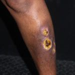

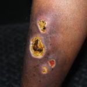

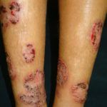

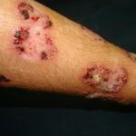

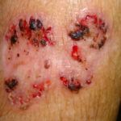

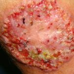

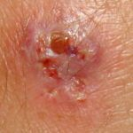

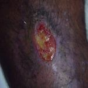

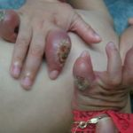

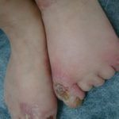

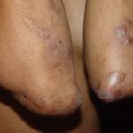

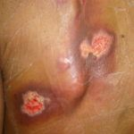

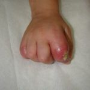

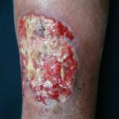

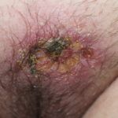

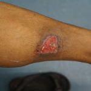

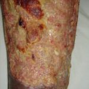

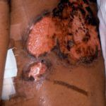

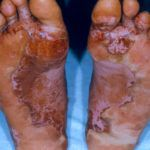

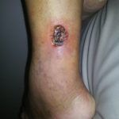

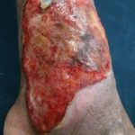

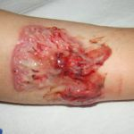

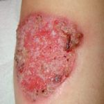


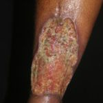

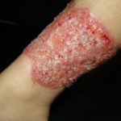

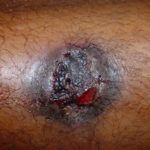

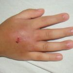


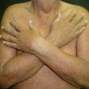

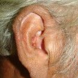
Texto da doença
Epidemiologia, quadro clínico, diagnóstico e tratamento de Dermatoses neutrofílicas, e como a Skin Prime pode ajudar.
Imagens clínicas de caráter educativo. Não substituem a avaliação de um dermatologista.